We are interested in simulating high concentration suspensions of
deformable capsules suspended in a Stokesian fluid. Such capsules are
typically modeled as infinitesimally thin membranes filled with a viscous
fluid. In particular, we are interested in a specific type of capsule
known as a vesicle. Vesicles are closed inextensible lipid
membranes containing a viscous fluid. The membrane mechanics are
characterized by bending resistance (derived by a Helfrich energy, or a
minimization of the  norm of the mean curvature), zero resistance to
shear, and inextensibility (infinite resistance to elongation). Although
we focus on vesicles, the resulting methodologies should be applicable in
a broad range of phenomena in complex fluids and suspensions.
norm of the mean curvature), zero resistance to
shear, and inextensibility (infinite resistance to elongation). Although
we focus on vesicles, the resulting methodologies should be applicable in
a broad range of phenomena in complex fluids and suspensions.
Vesicle evolution dynamics are given by a quasi-static Stokes equation driven by interface jump conditions derived by a balance of forces on the membrane. Given the position of the vesicles, the jump conditions can be evaluated, a Stokes problem with interface conditions can be solved, and the velocity at the interface advances the vesicle to its new location. We use a boundary integral formulation that results in a system of non-linear integro-differential equations for the vesicles's position and an auxiliary field that is a ``tension'' (it acts as a Lagrange multiplier to enforce the inextensibility constraint). Below we summarize the main equations.
Consider a single vesicle
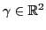
parameterized by the periodic function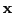
. The equations governing the motion of the vesicle are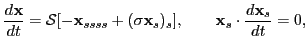 |
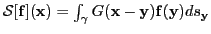
, where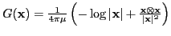
, is the single-layer potential for Stokes flow. We introduce the operators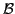
(bending),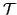
(tension), and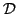
(divergence) so that the governing equations are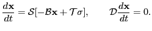 |
Discretizing in time and linearizing, the vesicle position and tension are updated by solving
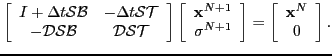 |
(1) |
As a first step, we are looking for efficient solvers for the Schur complement of the tension,
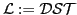
.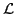
must be inverted for explicit schemes or it can be used to form block preconditioners for implicit schemes when solving (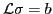
is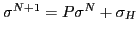
, where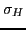
solves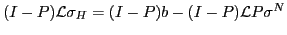
, and
We use a V-cycle multigrid solver for
and report results in
Table  . We see that only a few GMRES iterations are
required to apply the smoother. We set the GMRES tolerance of the
smoother to
. We see that only a few GMRES iterations are
required to apply the smoother. We set the GMRES tolerance of the
smoother to
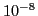
, the coarsest level to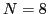
, and stop the solver when the relative error is less than . We are currently experimenting with using multigrid to precondition a GMRES solver for .
|